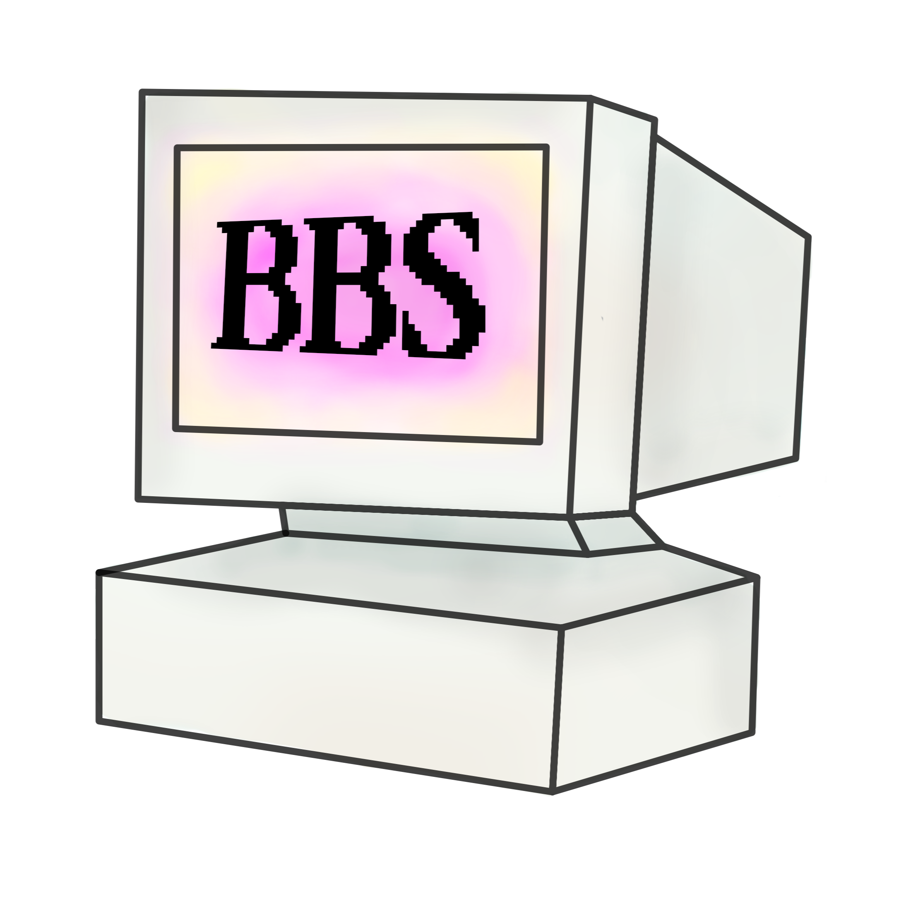

inleiding
Online communities zijn groepen mensen die via het internet contact met elkaar hebben vanwege gedeelde interesses, hobby's of ervaringen. Online communities worden tegenwoordig vaak geassocieerd met sociale media, maar ze bestaan al tientallen jaren.
jaren 70
In de jaren zeventig ontstonden de eerste systemen waarmee mensen via computers berichten konden uitwisselen. Een voorbeeld hiervan zijn Bulletin Board Systems (BBS), die vanaf 1978 werd gebruikt. Mensen maakten verbinding via een computer, een modem en een telefoonlijn. Hierdoor konden ze berichten achterlaten, informatie delen en bestanden uitwisselen. Computers werden hierdoor niet alleen gebruikt om in je eentje te werken, maar ook om met anderen te werken en informatie te delen. Mensen konden zo contact hebben met anderen die de dezelfde interesses delen zonder elkaar persoonlijk te kennen.

jaren 80
In de jaren tachtig werd ook Usenet populair. Dit was een systeem met discussiegroepen over verschillende onderwerpen. Mensen konden berichten plaatsen en reageren op berichten van anderen. In 1985 werd The WELL opgericht, een vroege online gemeenschap waar mensen met elkaar konden discussiëren en ideeën uitwisselen. The WELL ging niet alleen om het delen van informatie, maar ook om het opbouwen van sociale contacten. Mensen konden hun ervaringen delen en met andere praten over verschillende onderwerpen die zij belangrijk vonden.
silicon valley
Dit sluit aan bij ideeën die ook in Silicon Valley een rol speelden. Silicon Valley staat bekend als een belangrijke plek voor ontwikkeling van computertechnologie en het internet. Mensen zagen technologie niet alleen als een manier om geld te verdienen, maar ook als iets om mensen meer vrijheid te geven en informatie meer toegankelijker te maken. Dit past bij het idee dat mensen met behulp van technologie zelf informatie konden delen en gemeenschappen konden vormen.
jaren 90
In de jaren negentig werd het internet toegankelijker voor het grote publiek. Online forums en chatruimtes maakten het makkelijker om mensen met dezelfde interesses te vinden en gesprekken met hen te voeren. Het internet ontwikkelde zich steeds meer tot een plek waar mensen zelf informatie konden publiceren en met elkaar konden communiceren.
21e eeuw
Vanaf het begin van de eenentwintigste eeuw veranderde online communicatie opnieuw door de opkomst van sociale netwerken. Mensen konden makkelijker berichten, foto's en video's plaatsen en delen. Hierdoor konden online gemeenschappen groeien. Gebruikers waren niet alleen informatie aan het lezen, maar konden ook zelf content maken en hun ideeën met andere delen.
conclusie
Online communities spelen een rol in de manier waarop mensen tegenwoordig met elkaar verbonden zijn. De communities maken het mogelijk om mensen te ontmoeten die dezelfde interesses hebben, ideeën uit te wisselen en inspiratie op te doen. Die mensen zou je in het dagelijks leven misschien net snel tegenkomen. Hoewel technologie door de jaren heen veel is veranderd, is één ding is grotendeels hetzelfde gebleven: mensen gebruiken het internet om met elkaar te verbinden.